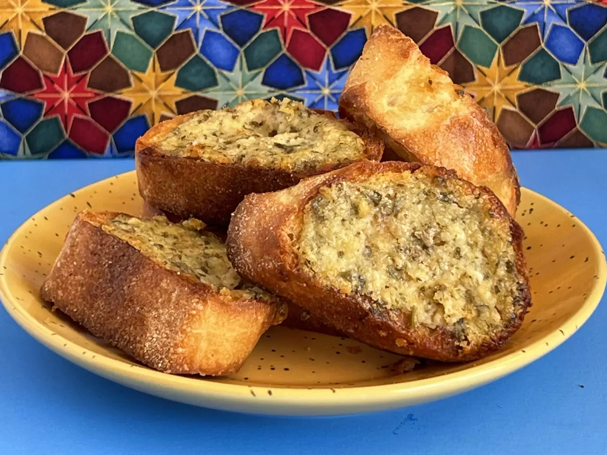

Home
basil pesto bread rounds recipes

Description:
A very easy, versatile recipe of a pesto topping on French bread slices
Great for potlucks or as an accompaniment to soup or salad meals
Ingredients:
- 1 (1 pound) loaf French baguette
- ⅔ cup mayonnaise
- ⅓ cup basil pesto
- 2 cloves garlic, minced
- ½ cup freshly grated Parmesan cheese
- salt to taste
Steps
-
Preheat oven on broiler setting. Arrange bread slices in a single layer
on a cookie sheet. Place under broiler for 5 to 8 minutes, or until
lightly toasted on one side. Watch carefully to ensure they don't burn.
Remove from oven, and flip bread slices so that the toasted side is on
the bottom.
-
Set the oven temperature for 350 degrees F (175 degrees C). In a small
bowl, mix together mayonnaise, pesto, garlic, Parmesan and salt. Spread
evenly over untoasted sides of bread slices.
-
Bake in the preheated oven for 6 to 8 minutes. Set the oven to broil,
and place the rounds under the broiler just until they begin to bubble
and turn golden. Let cool slightly before serving.